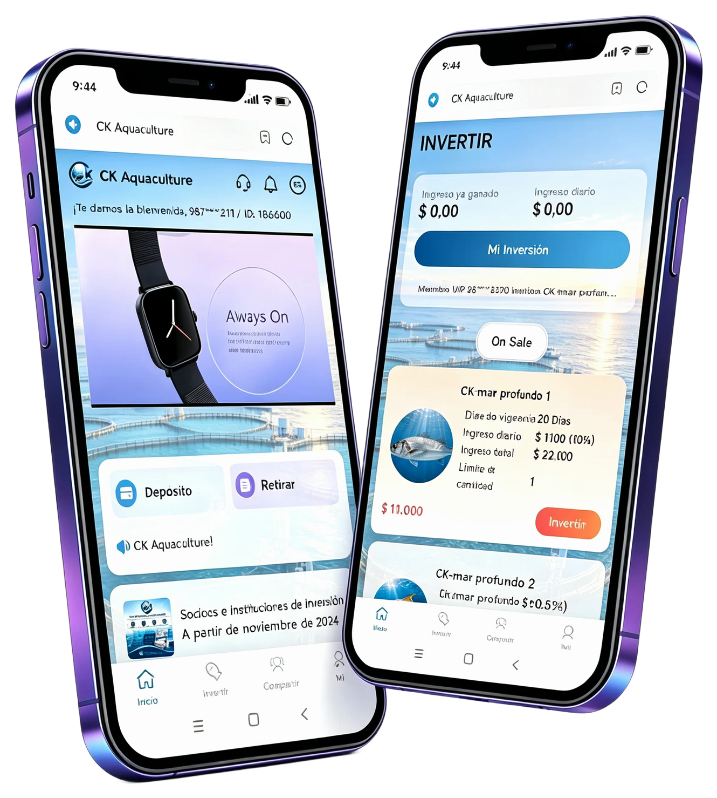
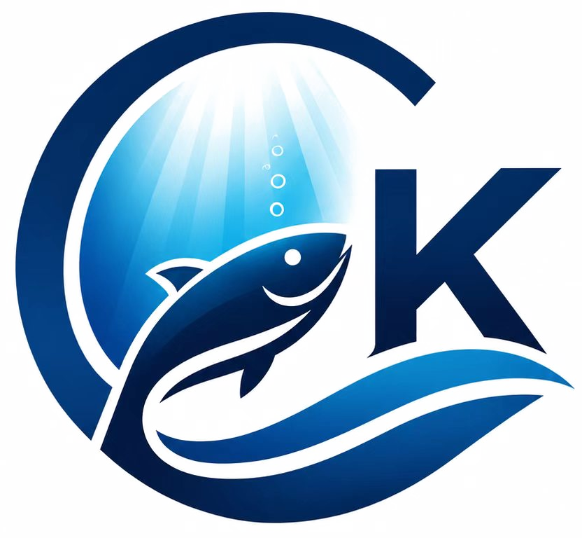
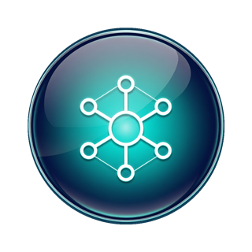
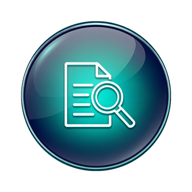
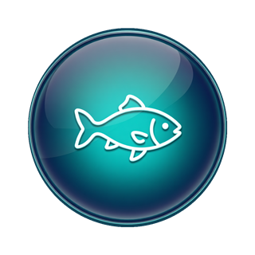
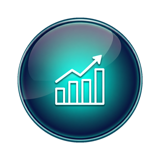
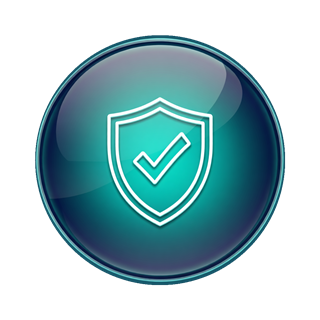
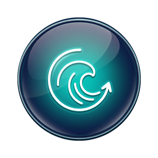
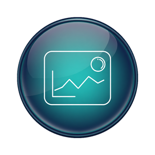
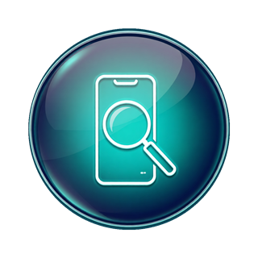

资源稀缺性：近海养殖空间趋于饱和，深远海拥有更洁净的水质和更广阔的发展潜力，是国家重点扶持的蓝色经济方向。
数据全公开，随时可查
您可以在App内查看每个养殖批次的生长曲线、投喂记录、水质指标，真正做到“看得见”的投资。
生长曲线
投喂记录
水质指标

App核心功能
我们的投资App将养殖项目拆分为标准化的投资份额，用户可按季参与，享受养殖周期结束后产生的销售利润分红。
一键投资：选择季度养殖计划，输入金额，即刻参与。
每日收益更新：养殖过程中鱼群生长情况与市场行情实时影响预估收益，App每日推送最新数据。
资产全景看板：总资产、累计投入、已实现收益、待结算收益等一目了然。
安全加密：账户登录、提现、信息修改均需多重验证，保障资金与隐私安全。
我们做什么
CK Aquaculture 专注于深远海智能化养殖，利用大型抗风浪网箱、水下监测系统和自动化投喂技术，在优质海域开展高价值鱼类（如金鲳鱼、石斑鱼、三文鱼等）的规模化养殖。我们的投资App将养殖项目拆分为标准化的投资份额，用户可按季参与，享受养殖周期结束后产生的销售利润分红。
为什么选择深海养殖
市场需求旺盛：全球高端海产品消费持续增长，优质深海鱼类供不应求，价格长期看涨。
技术壁垒高：我们掌握成熟的深海网箱养殖技术，具备抗风浪、防病害、智能监测等核心能力，有效降低养殖风险。
合作伙伴与投资机构
CK Aquaculture 的发展离不开全球顶尖合作伙伴的支持与信任。我们与以下机构建立了深度战略合作关系：

🌊 Hatch Blue —— 全球领先的水产养殖专业投资机构，专注于可持续水产养殖技术的投资与孵化。Hatch Blue 旗下 Blue Revolution Fund 深度参与全球水产养殖创新项目的资本布局。CK Aquaculture 与 Hatch Blue 在深海养殖技术评估与产业化落地方面保持密切协作。
🏦 欧洲投资银行（European Investment Bank） —— 欧盟官方投资机构，长期支持可持续蓝色经济项目。EIB 通过绿色金融工具为水产养殖技术创新提供资本支持，CK Aquaculture 的深海养殖基地建设已纳入其可持续蓝色经济融资评估体系。
🌏 Ocean 14 Capital —— 专注于海洋与蓝色经济的专业投资基金，致力于解决海洋过度捕捞、栖息地退化等全球性挑战。Ocean 14 Capital 对 CK Aquaculture 的可持续养殖模式给予了高度认可，并持续关注公司的技术升级与产能扩张。
🌍 Builders Vision —— 美国影响力投资平台，致力于通过资本推动可持续食品与农业系统的变革。Builders Vision 深度布局水产养殖领域，CK Aquaculture 的绿色养殖理念与其投资方向高度契合。
🐟 AquaChile – Quellón Plant —— AquaChile是智利大型三文鱼生产企业，专注于鲑鱼养殖、加工与全球销售，拥有完整的水产产业链。Quellón工厂位于智利南部重要渔业区域，主要承担鲑鱼加工业务，产品出口至全球多个市场。
🌊 Nissui Corporation —— Nissui Corporation是日本知名综合海洋食品集团，成立于1911年，业务涵盖水产、食品、精细化工及物流等领域。公司拥有全球化产业网络，覆盖水产捕捞、养殖、加工、研发及食品销售等多个环节。
🦀 Trident Seafoods —— Trident Seafoods成立于1973年，是北美大型垂直一体化海产品企业，总部位于美国西雅图，核心业务集中于阿拉斯加野生海产品的捕捞、加工和销售，主要产品包括鲑鱼、白鱼及螃蟹。
🦐 Nueva Pescanova —— Nueva Pescanova是西班牙大型跨国海产品集团，业务覆盖捕捞、养殖、加工和销售全产业链。集团拥有渔船、养殖基地及加工工厂，产品涵盖鱼类、虾类等多种海产品，业务遍及全球多个国家和地区
这些合作伙伴的加入，不仅为 CK Aquaculture 提供了资本与资源支持，更从技术、市场、风控等多维度为平台的发展保驾护航。
核心团队
CK Aquaculture 的团队由水产养殖专家、海洋工程师和金融科技从业者组成，拥有超过20年的行业经验。
👨💼 James R. Thornton —— 创始人兼首席执行官（CEO）
拥有25年水产养殖与海洋生物技术领域从业经验，曾在美国多家大型水产企业担任高管职务。Thornton 先生持有加州大学戴维斯分校海洋生物学博士学位，是国际水产养殖协会（WAS）资深会员。他主导了多个跨国深海养殖项目的规划与落地，对深远海网箱养殖技术、病害防控体系及产业链整合有深刻洞察。
👩💼 Dr. Elena Vasquez —— 首席技术官（CTO）
海洋工程与智能装备专家，麻省理工学院海洋工程博士。Vasquez 博士曾在全球领先的海洋科技企业担任技术负责人，主导开发了多套水下智能监测系统和AI养殖预警平台。她带领 CK Aquaculture 技术团队完成了深海网箱抗风浪设计、水下传感器网络部署及养殖数据智能分析系统的搭建，是公司技术壁垒的核心缔造者。
👨💼 Michael Chen —— 市场与战略总监（CMO）
拥有15年跨境金融与新兴市场拓展经验，曾任多家国际投资机构的亚太区负责人。Chen 先生熟悉全球资本市场运作规则，主导了 CK Aquaculture 多轮融资与国际化战略布局。他负责公司的全球市场拓展、品牌建设与投资者关系管理，致力于将 CK Aquaculture 打造为全球领先的深海养殖投资平台。
👩💼 Sarah Kim —— 运营与风控总监（COO）
金融风险管理专家，持有CFA和FRM双认证，拥有12年金融机构风控与合规管理经验。Kim 女士曾在国际知名投资银行担任风控部门负责人，擅长构建多层级风险控制体系。她全面负责 CK Aquaculture 的财务风控、合规审查与运营管理，确保每一笔投资资金的安全与透明。
WHY US · 选择理由
为什么选择 CK Aquaculture


🛡️合法合规，透明运营
公司在美国科罗拉多州依法注册，所有经营资质可公开查询。平台不设多层分销，资金流向清晰。


🐟实体产业，收益有根基
您的投资对应的是真实的鱼苗、饲料和海水，不是空泛的概念。养殖周期结束后，鱼获销售回款即成为您的分红来源。


⚙️技术驱动，风险可控
深海网箱抗风浪能力高，智能投喂系统降低饲料浪费，疾病防控体系成熟。我们以技术手段将养殖死亡率控制在行业极低水平。


📊数据全公开，随时可查
您可以在App内查看每个养殖批次的生长曲线、投喂记录、水质指标，真正做到“看得见”的投资。
关于我们
公司概况
CK Aquaculture Ltd 是一家总部位于美国科罗拉多州的创新型水产企业，通过自研的深海养殖投资App，将先进养殖技术与数字金融相结合，为全球个人投资者提供低门槛、高透明、可追溯的深海养殖投资项目。
我们不依赖复杂的层级模式，只专注用真实的养殖收益为您创造价值。于2022年11月1日正式注册成立，法定注册地址为1580 Logan Street, Denver, Colorado, USA。公司创始团队由水产养殖专家、海洋工程师和金融科技从业者组成，拥有超过20年的行业经验。
我们的使命
让可持续的海洋资源惠及大众。我们不追求短期的金融杠杆，而是扎根于实体养殖，通过技术提升产量与品质，再将利润公平分配给投资者。
我们的技术实力
- 养殖基地：与多个沿海国家合作，拥有专属的深远海养殖牧场，水域面积达数千公顷。
- 智能监控：水下摄像头、溶解氧传感器、水温流速仪实时回传数据，AI预警系统提前发现异常，确保鱼群健康成长。
- 绿色可持续：采用环保饲料和循环水处理工艺，减少对海洋生态的影响，符合国际可持续水产养殖标准。
财务风控
- 专款专用：用户投资资金直接用于当季养殖项目的饲料、鱼苗、设备维护等刚性支出，不挪用至其他领域。
- 保险保障：为养殖网箱购买财产保险和自然灾害险，降低极端天气带来的损失。
- 第三方审计：每季度聘请独立会计师事务所对养殖成本和销售流水进行审计，结果向投资者公开。
联系我们
公司全称：CK Aquaculture Ltd（CK 水产有限公司）
成立日期：2022年11月1日
注册地址：1580 Logan Street, Denver, Colorado, USA
客服邮箱：support@ckaquaculture.com（请通过App内反馈渠道优先）
立即加入
开启您的深海养殖投资只需2步：
1. 下载App（iOS/Android）
2. 注册账户